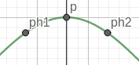

Definizione di Derivata
f è derivabile in x se il limite del rapporto incrementale \lim_{h \to 0} \frac{f(x+h) - f(x)}{h} esiste ed è finito.
Ponendo x+h = x_0 si ha \lim_{x \to x_0} \frac{f(x) - f(x_0)}{x - x_0}. Questa forma risulta più comoda in alcune dimostrazioni.
La derivata si rappresenta come: f'(x_0), D(f)|_{x_0}, \frac{df}{dx}|_{x_0}.
L'ultima sintassi risulta particolarmente utile per le funzioni a due variabili, infatti al denominatore si specifica per quale variabile si sta derivando.
Significato pratico
Il significato pratico della derivata è il tasso di cambiamento di una funzione rispetto a una variabile. È un modo per rispondere alla domanda, "quanto cambia la funzione in un punto?"
Rispondere veramente a questa domanda è impossibile, un cambiamento può essere osservato solo confrontando due punti diversi.
Quindi, si trova il cambiamento della funzione da un punto x a un punto che tende a x.
Significato geometrico
La retta tangente è la retta che approssima meglio la curva in quel punto.
La derivata calcola il coefficente angolare della retta tangente alla funzione in un certo punto.
Per ottenerla, applichiamo la formula del coefficente angolare di una retta passante per due punti, ponendo questi 2 punti estremamente vicini l'uno dall'altro.
Ottenendo il coefficente della retta tangente, possiamo anche ricavare l'equazione della retta stessa, usando l'equazione della retta passante per un punto e con coefficente noto.
y - y_0 = m(x-x_0) \\ y - y_0 = f'(x_0)(x-x_0)
Da Retta Secante a Retta Tangente
La derivata usa la formula per il coefficente angolare di una retta passante per due punti.
Questo, normalmente, ci darebbe il coefficente di una retta secante. Ovvero, la retta che che approssimizza meglio la funzione in un certo intervallo, con estremi i due punti che usiamo nel calcolo.
Nella formula della derivata: \lim_{x \to x_0} \frac{f(x) - f(x_0)}{x - x_0}
Stiamo facendo tendere uno di quei punti all'altro punto.
Quindi in pratica stiamo cercando la retta che approssimizza meglio la funzione non tra due punti, ma in un singolo punto. Usando due punti talmente vicini che, per noi, potrebbero essere anche lo stesso punto.
Continuità delle funzioni derivabili
Se una funzione è derivabile in un punto x_0 possiamo dire anche che è continua in x_0.
Attenzione, questo non significa che continuità implica derivabilità!
Dimostrazione
- Parti dalla definizione di continuita
- Sposta f(x_0) dentro il limite a sinistra
- Questa è una forma equivalente per dire che una funzione è continua. Vogliamo dimostrare che è sempre vera se la funzione è derivabile nel punto.
- Moltiplica per \frac{x - x_0}{x - x_0} dentro l'argomento del limite
- Porta il denominatore sotto, il nominatore mettilo in un altro limite
- La derivata, numero finito, per zero, ci da zero. Quindi se la funzione è derivabile, l'equivalenza continua ad essere vera.
Dimostriamolo partendo dalla definizione di continuità, e assumendo che la funzione sia derivabile.
Se una funzione è continua, vuol dire che
\lim_{x \to x_0} f(x) = f(x_0)
Noi vogliamo dimostrare che questa equivalenza sia vera sapendo che f(x) è derivabile in x_0.
f(x_0) è un numero, quindi possiamo facilmente spostarlo e inserirlo dentro il limite. Vedi limite di somma tra funzioni.
\lim_{x \to x_0} f(x) - f(x_0) = 0 \\
\lim_{x \to x_0} f(x) - \lim_{x \to x_0}f(x_0) = 0 \\
\lim_{x \to x_0} [f(x) - f(x_0)] = 0
Abbiamo trovato una forma equivalente per dire che una funzione è continua in un punto.
Se l'equazione è vera, possiamo dire che la funzione è continua in quel punto.
Il nostro obiettivo è mostrare che l'equazione è sempre vera se la funzione è derivabile nel punto.
Operiamo in maniera tale da far apparire il rapporto incrementale.
\lim_{x \to x_0} [f(x) - f(x_0) \cdot \frac{x - x_0}{x - x_0}] = 0 \\
\lim_{x \to x_0} [\frac{f(x) - f(x_0)}{x - x_0} \cdot {(x - x_0)}] = 0
Il limite di un prodotto tra due funzioni equivale al prodotto tra i loro limiti.
\lim_{x \to x_0} [\frac{f(x) - f(x_0)}{x - x_0}] \cdot \lim_{x \to x_0}[x - x_0] = 0 \\
f'(x_0) \cdot 0 = 0
Abbiamo fatto apparire la derivata della funzione. Sappiamo che la funzione è derivabile, quindi il limite del rapporto incrementale esiste ed è finito.
Un numero moltiplicato per zero ci da zero. Quindi, se la funzione è derivabile, allora l'equazione continuerà ad essere vera. Ciò implica che la funzione è continua.
Studio dell'andamento una funzione
Enunciato
Sia f: A \to B derivabile in I \subseteq A.
f è crescente in I \iff f'(x) \geq 0, \forall x \in I.
f è decrescente in I \iff f'(x) \leq 0, \forall x \in I.
Se f'(x) è proprio uguale a 0, allora la funzione non è ne crescente ne decrescente, rimane costante in quell'intervallo.
Commenti
Ecco la spiegazione pratica
Un coefficente angolare positivo significa che la retta è crescente.
Se è negativo, la retta è decrescente, Se è 0, la retta è orizzontale.
Intuitivamente quindi il segno della derivata ci aiuta a capire l'andamento della funzione, dato che calcola il coefficente angolare della retta che approssima meglio la funzione in un certo punto (un intervallo piccolissimo in realtà).
Dimostrazione
- Poni h > 0 e usa una funzione crescente come esempio
- Usa il rapporto incrementale con h
- Osserva il simbolo della frazione. Funziona anche per funzioni crsecenti e con h < 0.
Dimostriamo l'enunciato per le funzioni crescenti.
Sia h > 0.
Quindi x < x + h.
Siccome la funzione è crescente, f(x) < f(x + h).
Calcoliamo la derivata.
\lim_{h \to 0} \frac{f(x+h) - f(x)}{h}
f(x + h) - f(x) è positivo, così come h.
Il rapporto all'interno del limite è positivo.
Per il teorema della permanenza del segno, il limite con un argomento positivo darà risultato positivo o nullo.
Abbiamo dimostrato un verso della proposizione, ovvero che se f è crescente in x, allora f'(x) \geq 0.
Il teorema della permanenza del segno ci fa sapere anche che se il risultato di un limite è maggiore di 0, allora anche l'argomento del limite è maggiore di 0. Quindi, è dimostrato anche che se f'(x) \geq 0 allora f è crescente in x.
Teorema di Fermat, Punti Critici o Stazionari
Enunciato
f'(x_0) = 0 è la condizione necessaria affinchè (x_0, y_0) sia un massimo o un minimo relativo.
Commenti
Questi punti vengono chiamati punti critici o stazionari.
Coefficente angolare 0 significa che la retta tangente è orizzontale. Possiamo notare che in questi punti, solitamente avviene il passaggio da crescente a decrescente. L'eccezione è il flesso a tangente orizzontale.
Distinguere massimi e minimi
Intuitivamente possiamo notare che un punto stazionario P è minimo relativo se la funzione prima di P decresce, e dopo P cresce. Quindi P è il punto più basso per quella decrescita.
Stesso ragionamento per il massimo relativo. Prima di P la funzione cresce, dopo P la funzione decresce. P sarebbe in cima a quella crescita.
Quindi diciamo che (x_0, y_0) è massimo se f'(x) > 0, \quad x \in I^-(x_0) e f'(x) < 0, \quad x \in I^+(x_0)
(x_0, y_0) è minimo se f'(x) < 0, \quad x \in I^-(x_0) e f'(x) > 0, \quad x \in I^+(x_0)
Per trovare il massimo / minimo assoluto dobbiamo confrontare tutti i massimi e i minimi relativi della funzione.
Chiaramente, la funzione deve essere limitata e continua. Non ci sarà un massimo assoluto se da qualche parte la funzione tende a + \infty, e non ci sarà un minimo assoluto se la funzione tende a - \infty.
Dimostrazione
- Fai disegnino con un punto stazionario esempio
- Fai il rapporto incremetale con h
- Usa la permanenza del segno per il rapporto incrementale per h < 0 e per h > 0
- Siccome il limite deve essere unico, l'unica possibilità è che valga 0.
Prendiamo un punto di massimo e dimostriamo che la sua derivata è sicuramente uguale a 0.
\lim_{h \to 0} \frac{f(x + h) - f(x)}{h}
h può essere sia negativo che positivo... Quindi dobbiamo considerare questi due casi.
Nell'immagine, ph1 è h negativo mentre ph2 è h positivo.

Guardiamo cosa succede al segno del limite nei due casi.
Con h negativo, abbiamo numeratore negativo e denominatore negativo. La frazione sarà sicuramente maggiore o uguale a zero.
Per il teorema della permanenza del segno, il risultato del limite o sarà 0 o avrà segno uguale al segno dell'argomento del limite.
\lim_{h \to 0^-} \frac{f(x + h) - f(x)}{h} \geq 0
Con h positivo, abbiamo numeratore negativo e denominatore positivo. La frazione sarà sicuramente negativa. Anche qui applichiamo il teorema della permanenza del segno.
\lim_{h \to 0^+} \frac{f(x + h) - f(x)}{h} \leq 0
Stiamo dando per scontato che la funzione è derivabile in questo punto, quindi il limite esiste ed è finito.
Se il limite esiste allora è unico, e combacia con il limite destro e il limite sinistro.
L'unica possibilità che abbiamo quindi è che il limite è uguale a 0, perché è l'unico valore che rimane dopo aver unito le due condizioni sopra.
Quindi concludiamo che la derivata di un punto di massimo relativo è sicuramente uguale a 0.
Lo stesso ragionamento si può fare per dimostrare il teorema con i minimi relativi.
Teorema di Rolle
Sia f: [a, b] \to R continua in questo intervallo e derivabile in (a, b).
f(a) = f(b) \implies \exist x \in (a, b): f'(x) = 0
Il teorema di dice che se gli estremi di questo intervallo sono uguali, allora ci sarà almeno un punto in cui la retta tangente è orizzontale.
Questo teorema è abbastanza intuitivo dopo averci ragionato un pochino.
Se f(a) = f(b), allora le possibilità sono due:
- La funzione rimane costante nell'intervallo, formando una retta orizzontale. La tangente di una retta è la retta stessa, e la retta orizzontale ha coefficente angolare nullo.
- La funzione cambia tra a e b. In b dovrà tornare alla stessa altezza di a. Quindi, se all'inizio cresce, poi dovrà decrescere, e viceversa. In questi punti dove cambia l'andamento, ci sarà una tangente con coefficente angolare uguale a zero.
Teorema di Lagrange
Sia f: [a, b] \to R continua in questo intervallo e derivabile in (a, b).
Allora \exist x \in (a, b): \quad f'(x) = \frac{f(b) - f(a)}{b - a}
Il teorema ci dice che nel segmento esiste almeno un punto in cui la retta tangente alla curva ha lo stesso coefficente della retta secante per a e b.
Dal punto di vista della fisica, il teorema è come dire che sapendo che ci siamo spostati alla velocità media s, allora ci sarà almeno un punto nel tragitto in cui la nostra velocità istantanea era uguale a s.
Questo teorema è meno intuitivo, e la dimostrazione si può fare solo con una rigorosa analisi fondata sul teorema di Rolle.

Teorema di de L'Hopital
Questo teorema ci fornisce un ulteriore strumento per risolvere la forma indeterminata \frac 0 0.
\lim_{x \to x_0} f(x) = \lim_{x \to x_0} g(x) = 0.
Noi vogliamo calcolare \lim_{x \to x_0} \frac {f(x)}{g(x)}, che appunto ci da una forma indeterminata.
Se f e g sono derivabili in un intorno I(x_0) \setminus \{x_0\}, e g(x) \neq 0 \land g'(x) \neq 0 \forall x \in I, allora possiamo usare l'equivalenza \lim_{x \to x_0} \frac {f(x)}{g(x)} = \lim_{x \to x_0} \frac {f'(x)}{g'(x)}.
Abbiamo un limite di un rapporto, sia il nominatore che il denominatore ci danno zero.
Se sia il nominatore che il denominatore sono derivabili in un intervallo attorno al punto di accumulazione, tolto il punto di accumulazione, e se la derivata del denomatore non è più zero, allora possiamo fare il limite del rapporto tra le derivate.
Su youmath e su wikipedia è un po' diverso quindi boh.
Punti di non derivabilità
Punto Angoloso
Un punto angoloso è un punto di non derivabilità che si presenta quando il limite del rapporto incrementale dà risultati finiti ma diversi da destra e da sinistra, quindi non esiste.
Questo accade in particolare con le funzioni con uno o più valori assoluti.
\lim_{x \to x_0^-} \frac{f(x) - f(x_0)}{x - x_0} \in R \neq \lim_{x \to x_0^+} \frac{f(x) - f(x_0)}{x - x_0} \in R
In questo esempio si può intuire dal grafico che il limite, da sinistra, darà un numero negativo, mentre a destra darà un numero positivo.
Cuspide
Una cuspide è un punto di non derivabilità che si presenta quando il limite del rapporto incrementale dà risultati infiniti ma di segno opposto da destra e da sinistra, quindi non esiste.
Cresce e poi decresce, o vicecersa, talmente tanto che in quel punto sembra quasi ci sia una retta verticale.
\lim_{x \to x_0^-} \frac{f(x) - f(x_0)}{x - x_0} = \pm \infty, \quad \lim_{x \to x_0^+} \frac{f(x) - f(x_0)}{x - x_0} = \mp \infty
In questo esempio si può intuire dal grafico che il limite, da sinistra, darà un infinito negativo perché la funzione decresce così velocemente che comincia a sembrare una retta verticale. Mentre a destra darà un infinito positivo.
Flesso a Tangente Verticale
Un flesso a tangente verticale è un punto di non derivabilità si presenta quando il limite del rapporto incrementale dà risultati infiniti di segno corrispondente da destra e da sinistra.
\lim_{x \to x_0^-} \frac{f(x) - f(x_0)}{x - x_0} = \pm \infty, \quad \lim_{x \to x_0^+} \frac{f(x) - f(x_0)}{x - x_0} = \pm \infty
In questo esempio si può intuire dal grafico che il limite, sia da destra che da sinistra, darà un infinito positivo perché la funzione cresce così velocemente che comincia a sembrare una retta verticale.
Flessi
Un punto P appartenente al dominio della funzione f viene chiamato un flesso se in quel punto la curva attraversa la retta tangente.
Flesso a Tangente Verticale
Il punto di non derivabilità che abbiamo visto prima.
Flesso a Tangente Orizzontale
Questo è un punto critico che non è massimo o minimo.
La derivata della funzione si annulla ma non avviene un cambio di andamento.
In questo esempio la funzione cresce, arriva a un punto stazionario, e poi continua a crescere.
Flesso a Tangente Obliqua
Non abbiamo ancora modo di trovare questo punto di flesso.
Derivate Fondamentali
f(x): k, \quad f'(x) = 0.
f(x): x, \quad f'(x) = 1.
f(x): x^n, \quad f'(x) = nx^{n-1}.
f(x): \sin(x), \quad f'(x) = \cos(x).
f(x): \cos(x), \quad f'(x) = -\sin(x).
f(x): a^x, \quad f'(x) = a^x\ln(a).
f(x): \log_ax, \quad f'(x) = \frac 1 x\log_ae.
f(x): \ln x, \quad f'(x) = \frac 1 x.
Derivata Seconda, Concavità e Convessità
La derivata seconda analizza il cambiamento della derivata prima.
Quindi se la derivata prima era la velocità, allora la derivata seconda sarà l'accelerazione.
La derivata seconda ci da informazioni sulla concavità e sulla convessità della funzione.
Convessità (Concavità rivolta verso l'alto)
Abbiamo f: A \to R.
f è convessa in x_0 se esiste un intorno I(x_0) tale che ogni (x, f(x)) \forall x \in I sia al di sopra della retta tangente passante per x_0.
Usando la formula della retta passante per un punto e avente coefficente noto, abbiamo:
\forall x \in I: \quad f(x) \geq f'(x)(x - x_0) + f(x_0)
L'uguaglianza è compresa per il punto x_0.
Stiamo dicendo che la funzione è convessa in x_0 se esiste almeno un intorno di x_0 in cui la funzione sia sempre al di sopra della retta tangente che passa per x_0. O equivalente, dato che la tangente deve passare per x_0.
Quando la derivata seconda è positiva, allora la funzione è convessa.
Concavità (Concavità rivolta verso il basso)
Abbiamo f: A \to R.
f è concava in x_0 se esiste un intorno I(x_0) tale che ogni (x, f(x)) \forall x \in I sia al di sotto della retta tangente passante per x_0.
Usando la formula della retta passante per un punto e avente coefficente noto, abbiamo:
\forall x \in I: \quad f(x) \leq f'(x)(x - x_0) + f(x_0)
L'uguaglianza è compresa per il punto x_0.
Stiamo dicendo che la funzione è concava in x_0 se esiste almeno un intorno di x_0 in cui la funzione sia sempre al di sotto della retta tangente che passa per x_0. O equivalente, dato che la tangente deve passare per x_0.
Quando la derivata seconda è negativa, allora la funzione è concava.
Dimostrazione Derivata di k
- Parti dal rapporto incrementale con h
- Sostituisci le f con i valori calcolati nel punto
- 0 fratto qualsiasi numero fà 0
f(x): k, \quad f'(x) = 0.
Dimostriamolo usando la definizione di derivata.
\lim_{h \to 0} \frac{f(x+h) - f(x)}{h} = \\
\lim_{h \to 0} \frac{k - k}{h} = \\
\lim_{h \to 0} \frac{0}{h} = 0\\
Da notare che h non è esattamente 0, mentre al nominatore c'è proprio 0.
Quindi il risultato è \frac{0}{0^\pm}, e 0 fratto qualsiasi numero risulta in 0.
Dimostrazione Derivata di x
- Parti dal rapporto incrementale con h
- Sostituisci le f con i valori calcolati nel punto
- h fratto h dà 1
f(x): x, \quad f'(x) = 1.
Dimostriamolo usando la definizione di derivata.
\lim_{h \to 0} \frac{f(x+h) - f(x)}{h} = \\
\lim_{h \to 0} \frac{x + h - x}{h} = \\
\lim_{h \to 0} \frac{h}{h} = 1\\
Operazioni tra Derivate
Siano f, g: A \to R derivabili in x \in A. Allora:
D(f(x) + g(x)) = f'(x) + g'(x) \\ D(f(x) - g(x)) = f'(x) - g'(x) \\ D(f(x) \cdot g(x)) = f'(x) \cdot g(x) + f(x) \cdot g'(x) \\
Siano f, g: A \to R derivabili in x \in A, e g(x) \neq 0. Allora:
D(\frac{f(x)}{g(x)}) = \frac{f'(x) \cdot g(x) - f(x) \cdot g'(x)}{g^2(x)} \\
Siano f: A \to B, g: B \to C. f è derivabile in x \in A, g è derivabile in f(x) \in B. Allora:
D(g(f(x))) = g'(f(x)) \cdot f'(x) \\
Sia f: A \to B invertibile e derivabile in x, e f(x) \neq 0.
La derivata della funzione inversa è il reciproco della derivata della funzione calcolata nella controimmagine del punto.
La controimmagine sarebbe l'elemento del dominio che ci da una certa immagine.
D(f^{-1}(y)) = \frac{1}{f'(x)}, x = f^{-1}(y)
Quest'ultima formula viene usata per ricavare la derivata del logaritmo.
Dimostrazione Derivata di Somma e Differenza
- Parti dal rapporto incrementale, usando h
- Sostituisci usando la definizione di (f + g)(x)
- Riordina al numeratore e usa la proprietà distributiva
- Usa la somma tra limiti e otterrai la somma tra derivate
Siano f, g: A \to R derivabili in x \in A.
Vogliamo calcolare la derivata della funzione (f+g)(x).
D(f + g) = \\
\lim_{h \to 0} \frac{(f+g)(x+h) - (f+g)(x)}{h} =
La somma tra funzioni è definita come la somma dei risultati di f e di g calcolati nello stesso punto x.
\lim_{h \to 0} \frac{(f(x+h) + g(x+h)) - (f(x) + g(x))}{h} = \\
\lim_{h \to 0} \frac{f(x+h) + g(x+h) - f(x) - g(x)}{h} =
Guardando attentamente si noterà che abbiamo il rapporto incrementale di entrambe le funzioni.
\lim_{h \to 0} \frac{f(x+h) - f(x) + g(x+h) - g(x)}{h} = \\
\lim_{h \to 0} [\frac{f(x+h) - f(x)}{h} + \frac{g(x+h) - g(x)}{h}] = \\
\lim_{h \to 0} \frac{f(x+h) - f(x)}{h} + \lim_{h \to 0} \frac{g(x+h) - g(x)}{h} = \\
f'(x) + g'(x)
Quindi abbiamo che D(f + g) =f'(x) + g'(x).
Lo stesso ragionamento può essere applicato per la derivata di differenza, basta cambiare il segno.
Differenziali
f: A \to R con x interno ad A.
f è differenziabile in x se \exist c \in R: \quad f(x+h) - f(x) = c \cdot h + o(h)
Ovvero, la funzione in quel punto è ben approssimata da una retta tangente alla funzione in quel punto.
La retta tangente ha equazione y = cx. La differenza tra f(x+h) e f(x) è uguale alla retta calcolata in h più un infinitesimo di ordine superiore di h, un valore molto molto piccolo, ancora più piccolo di h.
In questa immagine, la parte in verde corrisponde a c \cdot h mentre la parte in rosso corrisponde a h.
Questi valori vengono anche chiamati df, ovvero il cambiamento della funzione, e dx, ovvero il cambiamento delle x.
Questo ci permette di descrivere la derivata in un altro modo. f'(x) = \frac {dy}{dx}
Misc: Analisi dell'accelerazione di alcune funzioni esempio
In verde la funzione, in blu la derivata prima (velocità), in rosso la derivata seconda (accelerazione).
f(x): kx
La funzione è una retta. Ad ogni passo di 1, la funzione cambia di k.
Quindi, la velocità è proprio la costante k. La velocità non cambia mai, quindi l'accelerazione è sempre 0.
f(x): x^2
Nel secondo quadrante la funzione perde velocità andando da sinistra verso destra.
Quindi la velocità è nel terzo quadrante, è negativa.
Continua a perdere velocità negativa fino ad arrivare al primo quadrante, dove la funzione comincia a risalire, quindi a prendere velocità positiva.
Si passa da una velocità negativa a una velocità positiva, questo passaggio viene effettuato aumentando l'accelerazione costantemente di 2. Quindi ad ogni x \in N, la velocità aumenta di 2.
La faccina felice quindi è formata dal fatto che la funzione scende, curvandosi a causa del cambiamento in accelerazione, e poi comincia a tornare indietro, quindi sale, sempre curvandosi a causa del cambiamento in accelerazione.
Ciò che è importante è questo ordine: scende, sale. Se torna indietro salendo, vuol dire che che l'accelerazione applicata è positiva.
Stesso ragionamento può essere fatto al contrario. La faccina triste sale, poi sale di meno, e poi torna indietro scendendo. Ha l'accelerazione negativa.
f(x): x^3
La potenza con radice dispari mantiene il segno della base.
Infatti si va da y negative a y positive. La velocità quindi è sempre positiva.
Il suo cambiamento però non è costante. La velocità aumenta proporzionalmente alle x.
Questa funzione è utile da osservare perché ci mostra un caso in cui la funzione non torna indietro.
Questo perché l'accelerazione cambia di segno. La funzione sale ripidamente, ma avvicinandosi allo 0 comincia a salire di meno. Questa è la decelerazione, infatti vediamo mezza faccina triste.
Poi ricomincia a salire, ripartendo con la velocità da 0. Anche qui possiamo vedere che all'inizio sale poco ripidamente, per diventare poi sempre più ripida. Questa è l'accelerazione che entra in campo dopo lo 0.